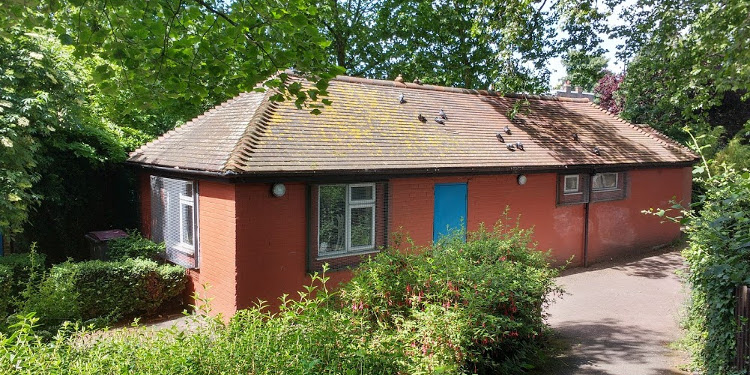

Introduction
The Brookmill Park Rangers hut fell out of regular use when the old keeper was retired but survived the vandalism that threatened similar park structures. Following change in policy for all 50 of the Lewisham parks, keepers
During early summer of 2016, SPC helped establish a base there for Friends of Brookmill Park, and Redstart Arts, clearing out the accumulation of mud, rugs and pond maintenance equipment, replacing it with plan chest, artist easel and preparing it to accommodate monthly meetings and weekly workshops.
The Mazi pilot – Creeknet has begun working with the friends group of local residents and users of the park to improve on existing website and public information systems as well as preparing a Mazizone for those seeking to share media files – images stories and keep in touch with the friends group about meetings schedules and public events in the park.
Today, exterior lighting, security and a more complete image of its future use in community hands is emerging and proving popular. Park noticeboards feature more regularly updated information and some fresh planting to compliment the corporate maintenance work, has begun.
The park is gaining popularity for its quality wildlife environment as well as reputation as a clean and safe place for young children, bird watchers, walkers as well as those living locally seeking a sanctuary of peace and beauty..
Please post your story to brookmillparkranger@deptfordcreek.net